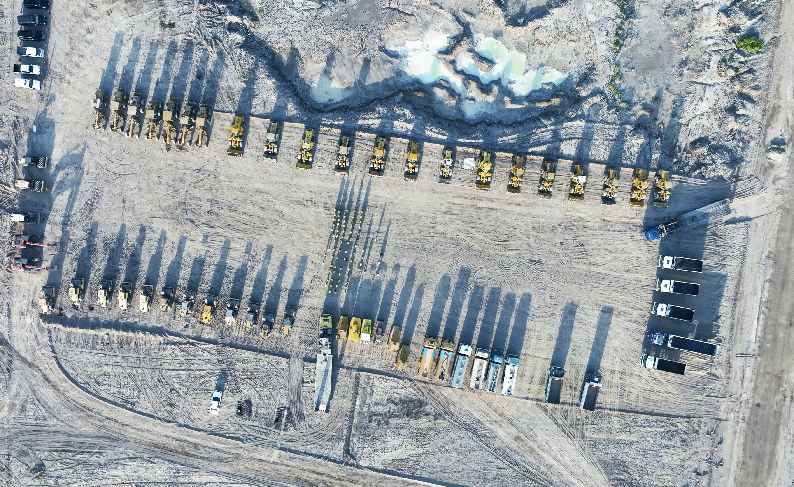
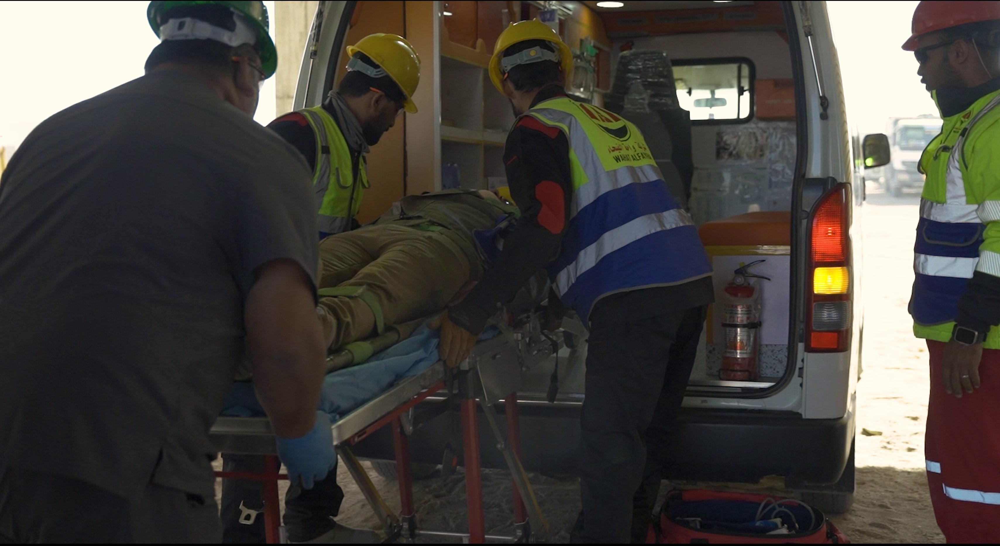
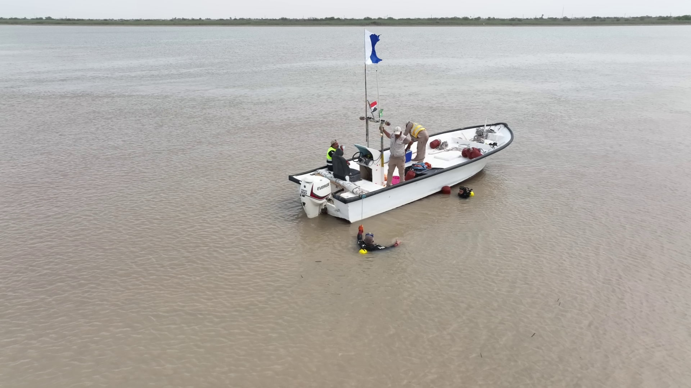
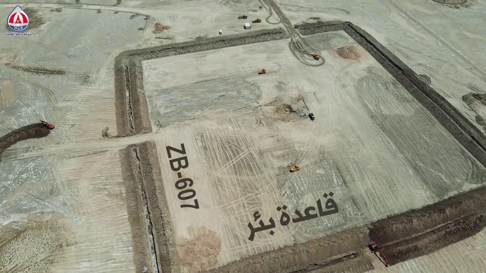
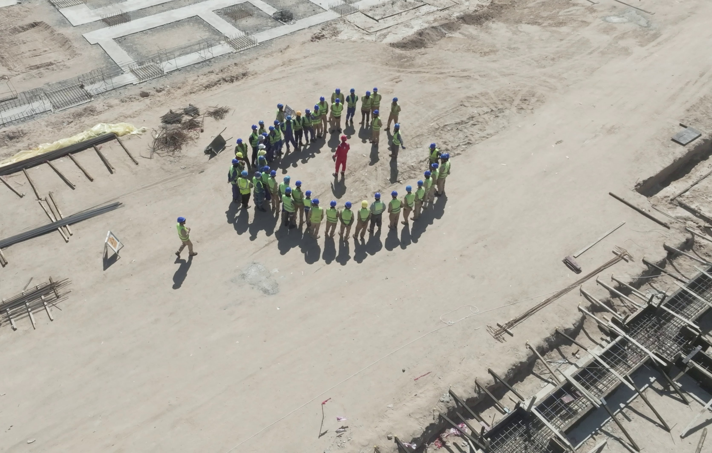
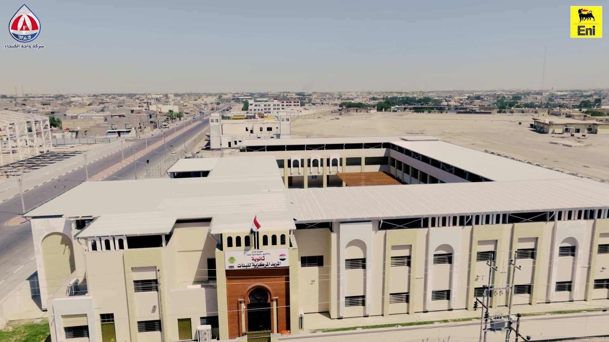
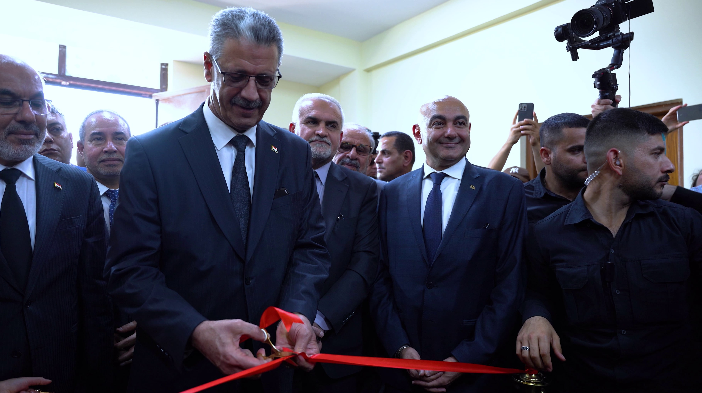

<!DOCTYPE HTML>
<html lang="ar" dir="rtl"></html>
<!--
	Forty by HTML5 UP
	html5up.net | @ajlkn
	Free for personal and commercial use under the CCA 3.0 license (html5up.net/license)
-->
<html>
	<head>
		<title>خدمات تصوير احترافي</title>
		<meta charset="utf-8" />
		<meta name="viewport" content="width=device-width, initial-scale=1, user-scalable=no" />
		<link rel="stylesheet" href="../assets/css/main.css" />
		<noscript><link rel="stylesheet" href="../assets/css/noscript.css" /></noscript>
		<!-- Favicon -->
		<link rel="shortcut icon" href="../images/favicon.ico" type="image/x-icon">
	</head>
	<body class="is-preload">

		<!-- Wrapper -->
			<div id="wrapper">

				<!-- Header -->
				<header id="header" class="alt">
					<a href="../index.html" class="logo"><strong>بكس</strong> <span>موف</span></a>
					<nav>
						<a href="#menu">القائمة</a>
					</nav>
				</header>

			<!-- Menu -->
				<nav id="menu">
					<ul class="links">
						<li><a href="../index.html">القائمة الرئيسية</a></li>
						<li><a href="ourwork.html">اعمالنا</a></li>
						<li><a href="../index.html">من نحن</a></li>
					</ul>
					<ul class="actions stacked">
						<li><a href="#contact" class="button primary fit scrolly">تواصل معنا</a></li>
						<!-- <li><a href="../EN/media.html" class="button fit">English</a></li> -->
					</ul>
				</nav>

				<!-- Banner -->
				<!-- Note: The "styleN" class below should match that of the header element. -->
					<section id="banner" class="style2">
						<div class="inner">
							<span class="image">
								
							</span>
							<header class="major">
								<h1>خدمات تصوير احترافي</h1>
							</header>
							<div class="content">
								<p>نقدم في <span class="tur">بكس موف</span> خدمات تصوير ومونتاج احترافية تشمل إنتاج ريلز (Reels) وبروموهات (Promo Videos) تُبرز نشاط شركتك ومشاريعها بأفضل صورة. نستخدم أحدث معدات التصوير والتقنيات الحديثة لإنتاج محتوى بصري جذاب يعكس قوة علامتك التجارية ويعزز حضورك الإعلامي. سواء كنت بحاجة إلى تغطية ميدانية أو فيديو تعريفي، نضمن لك جودة عالية ونتائج تليق بهوية شركتك.</p>
							</div>
						</div>
					</section>

				<!-- Main -->
					<div id="main" >

						<!-- One -->
							<section id="one">
								<div class="inner">
									<header class="major">
										<h2>أبرز أعمال التصوير</h2>
									</header>
									<p>في <span class="tur">بكس موف</span>، نقدم لك عروض تصوير متنوعة تلبي احتياجات شركتك بشكل احترافي ومميز. سواء كنت بحاجة إلى توثيق تقدّم مشروعك بشكل دوري أسبوعياً أو شهرياً من خلال تصوير ميداني يظهر احترافيتك واستمرارية عملك، أو كنت ترغب في تغطية مناسبة خاصة داخل شركتك مثل الزيارات الرسمية أو الفعاليات المهمة، فنحن نوفر لك كل ما تحتاجه. كما نقوم بإنتاج فيديوهات مونتاج احترافية، بروموهات، وريلز تعكس صورة قوية وجذابة لشركتك أمام الجمهور والشركاء.</p>
								</div>
							</section>

						<!-- Two -->
							<section id="two" class="spotlights">
								<section>
									<a href="" class="image">
										
									</a>
									<div class="content">
										<div class="inner">
											<header class="major">
												<h3>الاخلاء الطبي</h3>
											</header>
											<p>قمنا بتوثيق عمليات الإخلاء الطبي الميداني بكامل مراحلها، وذلك بحضور كوادر من شركة إيني العالمية، حيث حرصنا على إبراز الاحترافية العالية والتنسيق بين الفرق الطبية والفنية. نوفر توثيقاً دقيقاً ومرئياً لمثل هذه الحالات المهمة، مما يعزز من شفافية العمليات ويُظهر جاهزية الشركة في التعامل مع الحالات الطارئة بأعلى المعايير.</p>
										</div>
									</div>
								</section>
								<section>
									<a href="" class="image">
										
									</a>
									<div class="content">
										<div class="inner">
											<header class="major">
												<h3>تصوير جوي لعمليات البحث عن المخلفات الحربية</h3>
											</header>
											<p>قدمنا توثيقاً جوياً احترافياً لعمليات البحث عن المخلفات الحربية في أعماق شط العرب – منطقة الفاو، مما مكّن الشركة المنفذة من عرض جهودها بصورة متميزة واحترافية أمام الشركاء والجهات الرسمية. هذه الخدمة ساعدت في تعزيز مصداقية المشروع، ووفرت مادة بصرية قوية يمكن استخدامها في التقارير، العروض التقديمية، وملفات المناقصات، لتظهر الشركة بأفضل صورة ممكنة وتعكس قوة التنظيم ودقة التنفيذ على الأرض.</p>
										</div>
									</div>
								</section>
								<section>
									<a href="" class="image">
										
									</a>
									<div class="content">
										<div class="inner">
											<header class="major">
												<h3>تصوير جوي لقاعدة بئر</h3>
											</header>
											<p>قمنا بتنفيذ تصوير جوي احترافي لأعمال الصيانة على قاعدة بئر في حقل الزبير، حيث ساعد هذا التوثيق الشركة على إبراز كفاءتها الفنية وتنظيمها العالي في تنفيذ الأعمال الميدانية. استخدمت هذه اللقطات في العروض التقديمية والتقارير الرسمية، مما ساعد في تعزيز صورة الشركة لدى شركائها وعكس احترافيتها في إدارة المشاريع النفطية.</p>
										</div>
									</div>
								</section>
								<section>
									<a href="" class="image">
										
									</a>
									<div class="content">
										<div class="inner">
											<header class="major">
												<h3>برومو بريف صباحي</h3>
											</header>
											<p>صورنا برومو بريف صباحي يوثق انطلاق فرق العمل داخل المواقع الميدانية مع التركيز على الجاهزية، الالتزام، ومواضيع السلامة التي تُناقش في بداية كل يوم عمل. هذا النوع من التوثيق يُظهر مدى حرص الشركة على تطبيق معايير السلامة والتنظيم، ويُعد أداة فعالة لتعزيز صورتها المهنية أمام الشركاء والعملاء.</p>
										</div>
									</div>
								</section>
								<section>
									<a href="" class="image">
										
									</a>
									<div class="content">
										<div class="inner">
											<header class="major">
												<h3>تصوير مراحل بناء مدرسة نموذجية</h3>
											</header>
											<p>صورنا مراحل بناء مدرسة نموذجية من البداية حتى الانتهاء، حيث تم توثيق كل مرحلة من مراحل المشروع بتفاصيل دقيقة، مما أتاح للشركة عرض الجهود المبذولة والاحترافية في إتمام المشروع وفقاً للمعايير العالية. هذا التوثيق يُستخدم في التقارير الإعلامية والعروض التقديمية لتعزيز صورة الشركة وإظهار التزامها بتقديم مشاريع متميزة تساهم في تحسين البنية التحتية للمجتمع.</p>
										</div>
									</div>
								</section>
								<section>
									<a href="" class="image">
										
									</a>
									<div class="content">
										<div class="inner">
											<header class="major">
												<h3>افتتاح المدرسة من قبل وزير النفط</h3>
											</header>
											<p>قمنا بتوثيق افتتاح المدرسة من قبل وزير النفط في الزبير، حيث أظهرت اللقطات الاحترافية الحدث الهام. وتم تسليط الضوء على الاحتفالات الرسمية، التفاعل مع الحضور، وكلمات الوزير، مما أضاف قيمة كبيرة للحدث وجعل التوثيق أداة قوية يمكن استخدامها في التقارير الإعلامية، العروض التقديمية، وملفات المناقصات لتعزيز صورة الشركة والمساهمة المجتمعية.</p>
										</div>
									</div>
								</section>
							</section>
							

						<!-- Three -->
							<section id="three">
								<div class="inner">
									<header class="major">
										<h2>تواصل معنا</h2>
									</header>
									<p><span class="tur">بكس موف</span> لديها الكثير من الأفكار والإبداع لتلبية احتياجاتك وتقديم حلول متميزة. لا تتردد في التواصل معنا لنساعدك في تحقيق أهدافك بأسلوب احترافي وبجودة عالية. نحن هنا لنجعل مشاريعك تبرز بأفضل صورة ممكنة!</p>
								</div>
							</section>

					</div>

				<!-- Contact -->
				<section id="contact">
					<div class="inner">
						<section>
							<form method="post" action="#">
								<div class="fields">
									<div class="field half">
										<label for="name">الاسم</label>
										<input type="text" name="name" id="name" />
									</div>
									<div class="field half">
										<label for="email">البريد الالكتروني</label>
										<input type="text" name="email" id="email" />
									</div>
									<div class="field">
										<label for="message">وصف عملك</label>
										<textarea name="message" id="message" rows="6"></textarea>
									</div>
								</div>
								<ul class="actions">
									<li><input type="submit" value="Send Message" class="primary" /></li>
									<li><input type="reset" value="Clear" /></li>
								</ul>
							</form>
						</section>
						<section class="split">
							<section>
								<div class="contact-method">
									<span class="icon solid alt fa-envelope"></span>
									<h3>البريد الالكتروني</h3>
									<a href="#">information@untitled.tld</a>
								</div>
							</section>
							<section>
								<div class="contact-method">
									<span class="icon solid alt fa-phone"></span>
									<h3>رقم الهاتف</h3>
									<span>(000) 000-0000 x12387</span>
								</div>
							</section>
							<section>
								<div class="contact-method">
									<span class="icon solid alt fa-home"></span>
									<h3>العنوان</h3>
									<span>1234 Somewhere Road #5432<br />
									Nashville, TN 00000<br />
									United States of America</span>
								</div>
							</section>
						</section>
					</div>
				</section>

			<!-- Footer -->
				<footer id="footer">
					<div class="inner">
						<ul class="icons">
							<li><a href="#" class="icon brands alt fa-whatsapp"><span class="label">Twitter</span></a></li>
							<li><a href="#" class="icon brands alt fa-facebook-f"><span class="label">Facebook</span></a></li>
							<li><a href="#" class="icon brands alt fa-instagram"><span class="label">Instagram</span></a></li>
							<li><a href="#" class="icon brands alt fa-github"><span class="label">GitHub</span></a></li>
							<li><a href="#" class="icon brands alt fa-linkedin-in"><span class="label">LinkedIn</span></a></li>
						</ul>
						<ul class="copyright">
							<li>&copy; PXMOVE</li><li>Design: <a href="#">Mohammed Salah</a></li>
						</ul>
					</div>
				</footer>

		<!-- Scripts -->
			<script src="../assets/js/jquery.min.js"></script>
			<script src="../assets/js/jquery.scrolly.min.js"></script>
			<script src="../assets/js/jquery.scrollex.min.js"></script>
			<script src="../assets/js/browser.min.js"></script>
			<script src="../assets/js/breakpoints.min.js"></script>
			<script src="../assets/js/util.js"></script>
			<script src="../assets/js/main.js"></script>

	</body>
</html>